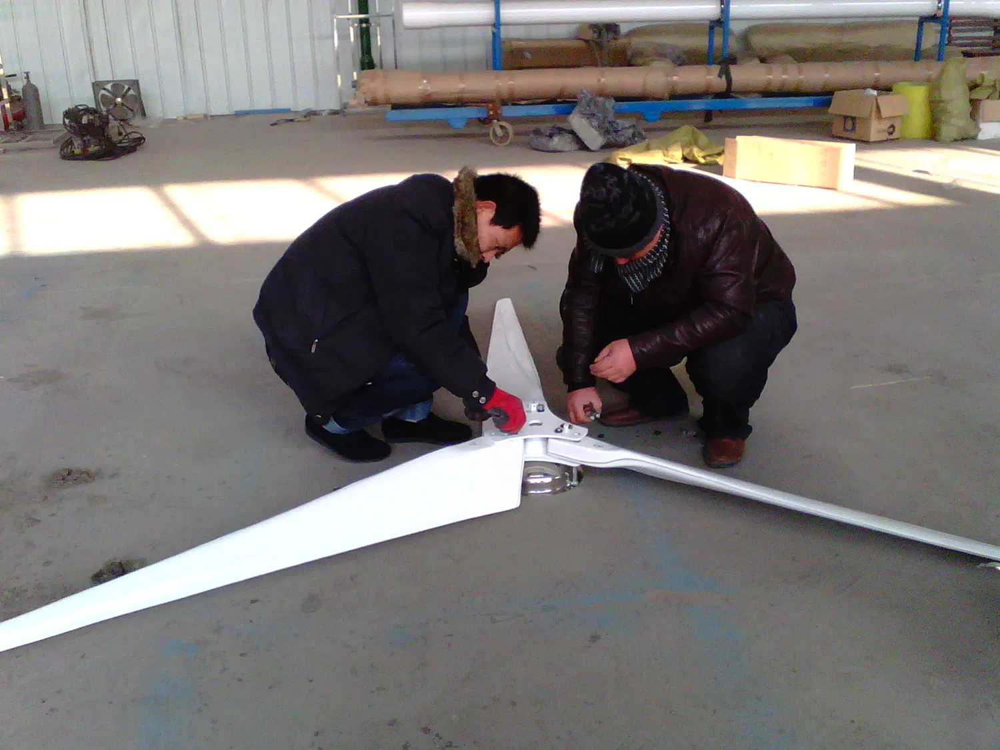
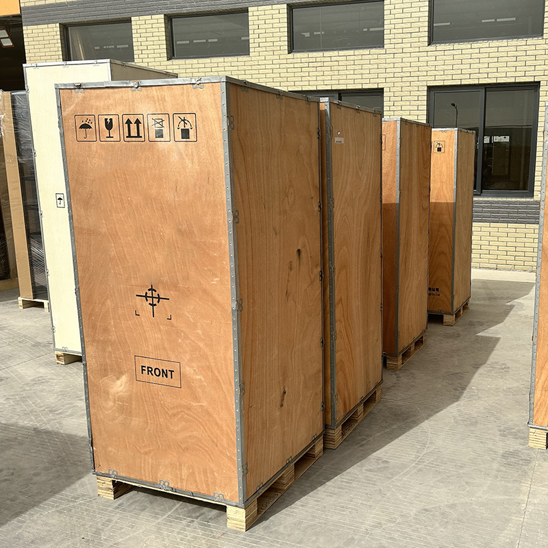

Use credible site data
Review wind distribution, terrain, obstacles, hub height, extreme conditions and seasonal energy demand.
Distributed wind energy
Explore wind generation for open rural sites, remote facilities and hybrid energy systems. Build the project around the wind resource, tower location and electrical architecture, with storage and solar where they fit your demand.

Average wind speed is not enough. Wind distribution, turbulence, obstacles, hub height and the selected model’s power curve determine whether a project is viable.
Review wind distribution, terrain, obstacles, hub height, extreme conditions and seasonal energy demand.
Assess turbine, controller, inverter, batteries, braking, tower, foundation, cabling, protection and monitoring.
Access, lifting, permitting, setback, noise criteria, inspection and maintenance all influence project feasibility.
Small wind is most credible when the site resource, load profile and full installation scope are reviewed together.
Serve critical loads where credible wind data supports local generation.
Coordinate site demand, open terrain, tower access and maintenance planning.
Coordinate wind with solar, storage and backup generation at remote sites.
Combine complementary resources with storage and common controls.
Integrate wind with batteries, conversion equipment and dispatch logic.
Proceed where measured conditions, permitting and installation economics support it.
Wind projects need more than a turbine. Review the installation, complementary generation, electrical conversion and delivery scope together to build a practical site solution.

Assess terrain, obstacles, hub height, foundation requirements and service access before deciding the installation arrangement.

Coordinate assembly guidance, lifting requirements, local tools and personnel so the turbine and tower can be installed in the right sequence.

Agree turbine controller, inverter, battery, protection, grounding and shutdown interfaces as one coordinated energy system.

Identify what is supplied with the equipment and what is sourced locally, including lifting, foundations, cabling and installation tools.
Use the wind study, turbine documentation and installation plan to align energy expectations, structural inputs and operating requirements.
Power rating and the exact wind-speed condition associated with that rating.
Full selected-model output curve, test basis and assumptions used for yield estimates.
Startup, cut-in, rated, cut-out and survival wind conditions.
Rotor diameter, swept area, blades, generator type and electrical output.
Braking, overspeed protection, dump load, shutdown and emergency procedures.
Hub height, structural loads, foundation inputs, grounding and lightning protection.
Acoustic data, temperature, corrosion treatment, altitude and setback needs.
Controller, battery, inverter or grid compatibility, permitting and documentation.
The best first conversation includes resource evidence, terrain context and the target electrical architecture.
Provide credible wind data, terrain and obstacles, proposed hub height, load profile, access and environmental conditions.
Select battery, hybrid or grid-connected architecture and review controls, tower, foundation, protection and monitoring.
Review turbine and tower information, electrical interfaces, delivery, local works, installation responsibilities and service access.
Your project handover. Keep the selected turbine’s power curve, tower and foundation inputs, electrical diagrams, installation guidance and maintenance schedule together with the agreed supply and local-work responsibilities.
Share your wind data, site or terrain information, target energy use and preferred system architecture for a selected-model review.
WhatsApp +86 152 2422 0207